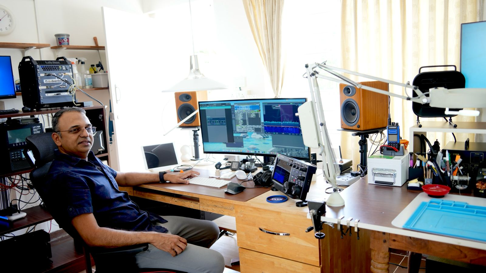
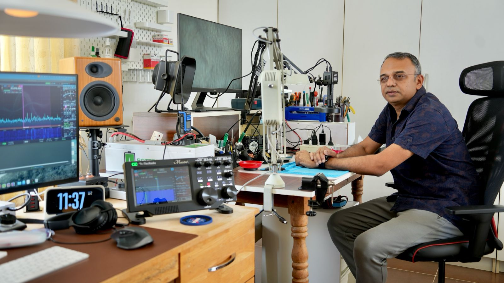

MK83TE · Bengaluru, Karnataka · Licenced 1993
Located in the garden city of India, Bangalore. Licensed since 1993, I started operations in Thrissur, Kerala with a simple homebrew QRP rig following VU2VWN OM Vasanth (SK)'s circuit — the most popular design of those days.
Later graduated to SSB with the help of an old exciter originally made by VU2UCY Om Bhasi (SK). Went through different iterations of 807 tube QRO and some military surplus gear (Redifone GR 345) during the 1990s. Shifted to Bangalore in early 2003.
I travel extensively for work and mostly operate remote during free time. The shack runs a fully automated setup including remote antenna switching and lightning protection.


/ui board. Thirteen collapsible cards (FlexRadio, LP-700, SPE amplifier, rotator, lightning protection, power control, solar conditions, DXCC tracker, RBN skimmer, Raspberry Pi fleet, internet health, GPS NTP, UberSDR receiver) lay out in a responsive masonry grid that adapts from phone to desktop with no build step. Each card polls flow context every 1–5 s, shows a colour-coded collapsed summary and expands for full telemetry. Top bar carries the callsign, a live/offline connectivity pill and four clocks (UTC / IST / sunrise / sunset). PWA-installable on iPad and iPhone via "Add to Home Screen"./ui board.pps-gpio + chrony pulls PPS error down to ±171 ns — well below anything a userland NTP implementation can match. Publishes chrony status, satellite count and fix quality over MQTT to the shack dashboard, with an LWT offline marker. Production timeserver for the LAN.INIT (RFC 5905 §3.5) so clients cleanly fall back to other NTP sources rather than trusting a drifting local clock. Publishes status over MQTT with the same schema as the Pi NTP server and an LWT offline marker. WiFiManager captive-portal config — no compile-time secrets.vbat_mv on /hb + /status, on-demand query_vbat) is exposed over MQTT, so noise floor, watchdog threshold, TUN_CAP calibration and %SOC are all tunable live from the dashboard without opening the enclosure. WiFiManager captive portal carries WiFi and the shack broker's ACL-scoped iot MQTT credentials — no compiled-in secrets..app; the suite loads it through the RadioPluginKit contract — the host links only the contract, never compiles a plugin in. Plugins are discovered at runtime (browse a catalog or sideload a .radioplugin) and run out-of-process as sandboxed ExtensionKit extensions, so crash isolation is real and adding one never requires rebuilding the suite. Ships with an empty catalog: published plugins today are LP-700, LP-100A, Band Pass Filter and Antenna Switch; SPE amplifier (MacExpert) and SO2R Box are next. Notarized release pipeline, macOS 14+. Original concept and reference implementation by Vinod VU3ESV — upstream at VU3ESV/AmateurRadioSuite.state + heartbeat events over /ws, /healthz endpoint, all writes serialised through one lock so poll queries and client commands never interleave on the wire.SO2RBox.exe and cross-checked against N4AF's TR4W uYCCCSO2R.pas.gpsd + chrony stack turns the Mac itself into a stratum-2 NTP server for the rest of the shack; a small privileged helper daemon lets the app talk to chrony without sudo each time.Contents/MacOS/. Slimmed from ~1.3 GB to 253 MB by stripping unused Qt frameworks, qml, translations, metatypes, and lipo-thinning every Mach-O binary to arm64. A macOS UI sizing patch relaxes upstream's hard-coded setFixedHeight/Width calls so Qt stops clipping label text on native macOS control chrome (50kHz→50kH, Sweep→Sweer, Rescan→Rescar). Ships with a hand-drawn 1024 px macOS-style .icns (rounded square + Smith-chart logo) in place of the upstream 128 px fallback. Logs to ~/Library/Logs/NanoVNASaver/nanovnasaver.log for easy support.vu2cpl.tunnel.ubersdr.org. UberSDR by M9PSY (madpsy), built on Phil Karn KA9Q's ka9q-radio engine; the receive antenna is Chavdar Levkov LZ1AQ's active loop design.For sked requests, email via QRZ or WhatsApp. For QSL, use LOTW or Clublog OQRS — no bureau. 73 de VU2CPL.
{kind=link}
{kind=link}
{kind=link}